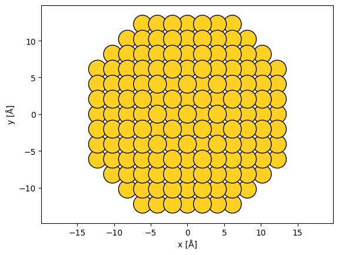
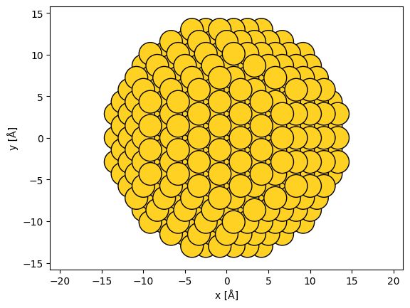
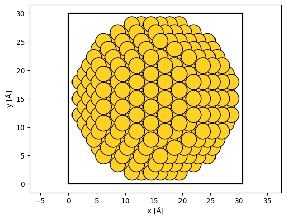
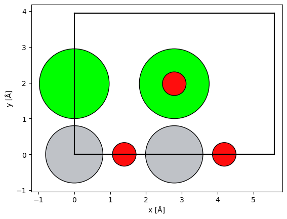
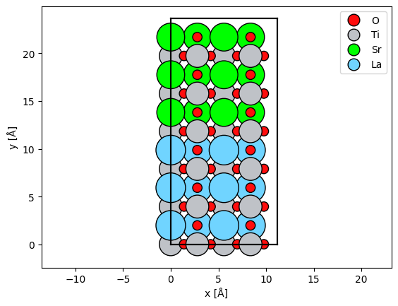
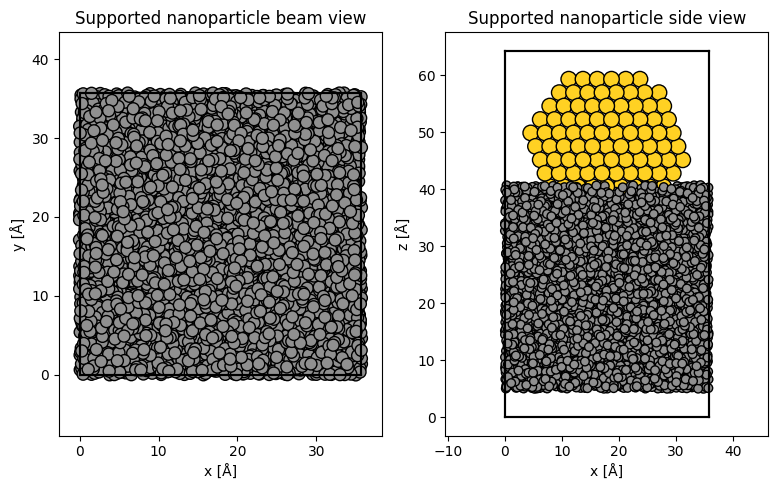

Advanced atomic models#
In this advanced tutorial, we cover more complex ways of creating and manipulating atomic models.
Visualizing structures in 3D#
To view the atoms in an interactive 3D graphical user interface (GUI) viewer, we can use ASE’s view function (see the documentation here). Note that this may not work in a remote environment unless X11 forwarding is correctly set up (below we simply show the code instead of running it).
from ase.visualize import view
view(srtio3)
If you are working in a remote environment or prefer to embed the 3D viewer in the notebook, you need to install nglview (which is not a default dependency of abTEM). This will allow you to use the nglview backend for the view function.
view(srtio3, viewer='nglview')
Building structures#
In addition to importing structures, ASE has tools for procedurally creating many common structures:
Common bulk crystals:
ase.build.bulkBulk structures by its spacegroup:
ase.spacegroup.crystalCarbon nanotubes:
ase.build.nanotubeNanoparticles:
ase.cluster
As an example, we create a nanoparticle of gold by specifying 6 layers in the (100) directions, 9 in the (110) directions and 5 in the (111) directions.
from ase.cluster import FaceCenteredCubic
surfaces = [(1, 0, 0), (1, 1, 0), (1, 1, 1)]
layers = [6, 9, 5]
lc = 4.08
nanoparticle = FaceCenteredCubic("Au", surfaces, layers, latticeconstant=lc)
abtem.show_atoms(nanoparticle, scale=0.9);

Manipulating structures#
The structure you import or build may not match your requirements or the requirements of abTEM. Here, we exemplify the most common manipulations needed to modify atomic models for image simulation.
Rotating structures#
A common problem when creating model structures is choosing the imaging direction. abTEM always assumes that the imaging electrons travel along the \(z\)-axis in the direction from negative to positive coordinate values, hence choosing the propagation direction requires manipulating the atomic structure.
In this example, we rotate the nanoparticle into the (111) zone axis. We first rotate the atoms by 45° around \(x\) and then by \(\sim\)35.26° around \(y\).
rotated_nanoparticle = nanoparticle.copy()
rotated_nanoparticle.rotate(45, "x")
y_angle = np.degrees(np.arctan(1 / np.sqrt(2)))
rotated_nanoparticle.rotate(y_angle, "y")
abtem.show_atoms(rotated_nanoparticle, scale=1);

Adding vacuum#
The unit cell of the nanoparticle has zero extent.
rotated_nanoparticle.cell
Cell([0.0, 0.0, 0.0])
The extent of the unit cell determines the extent of the wave function, hence this is an invalid cell for abTEM simulations. We can use the center method to add vacuum around the unit cell.
centered_nanoparticle = rotated_nanoparticle.copy()
centered_nanoparticle.center(vacuum=2)
Showing the structure, we now see that there is a vacuum of \(2 \ \mathrm{Å}\) separating the outermost atoms and the unit cell boundary (shown as thick black lines).
abtem.show_atoms(centered_nanoparticle, scale=1);

Rotation of bulk structures#
We simply rotated the nanoparticle without considering the unit cell because it does not require periodicity at the cell boundary. This is not possible for periodic structures; in such cases ASE provides the surface function for picking the zone axis of a given structure by providing the Miller indices. Below we create a SrTiO3 structure in the (110) zone axis.
srtio3 = ase.io.read("../walkthrough/data/SrTiO3.cif")
srtio3_110 = ase.build.surface(srtio3, indices=(1, 1, 0), layers=2, periodic=True)
srtio3_110.translate((0, srtio3_110.cell.lengths()[1] / 2, 0))
srtio3_110.wrap()
abtem.show_atoms(srtio3_110, plane="xy", scale=0.5);

See also
For creating a view that does not correspond to a low-index zone axis, see our introduction to creating arbitrary orthogonal structures at the bottom of this document.
Conditionally modifying atoms#
The atomic positions and numbers are just numpy arrays and can be modified directly. The ASE documentation provides some tips here.
We create a SrTiO3 / LaTiO3 interface by changing the atomic number of the Sr atoms in one half of the cell.
repeated_srtio3 = srtio3_110 * (2, 6, 4)
sto_lto_interface = repeated_srtio3.copy()
# select atoms with atomic number 38
mask_sr = sto_lto_interface.numbers == 38
# select atoms below the center
mask_below = sto_lto_interface.positions[:, 1] < sto_lto_interface.cell[1, 1] / 2
# combine selection
mask_combined = mask_sr * mask_below
# assign new atomic numbers to selection
sto_lto_interface.numbers[mask_combined] = 57
abtem.show_atoms(sto_lto_interface, legend=True);

Scaling structures#
The structure created above uses the lattice constant of SrTiO3 calculated from DFT. Below we scale the structure to have the average experimental lattice constant of SrTiO3 and LaTiO3, achieved by using the scale_atoms=True parameter.
scaled_sto_lto_interface = sto_lto_interface.copy()
a_sr = 3.905
a_la = 3.97
a_new = (3.905 + 3.97) / 2
a_old = srtio3.cell[0, 0]
new_cell = sto_lto_interface.cell * (a_new / a_old)
scaled_sto_lto_interface.set_cell(new_cell, scale_atoms=True)
Note
We modified the STO/LTO interface above without any regard to the atomic-scale physics. In some, if not most cases, your model should be calculated from an accurate atomistic model, e.g. density functional theory.
Combining multiple structures#
Some complex heterostructures can only be created by combining multiple component structures. As an example, we create a model of a nanoparticle supported on amorphous carbon.
Below, the amorphous carbon is created by randomly displacing the atoms of a diamond structure; more accurate models should be considered for realistic simulations (e.g. [Car20]).
substrate = ase.build.bulk("C", cubic=True)
# repeat diamond structure
substrate = substrate * (10, 10, 10)
# displace atoms with a standard deviation of 50 % of the bond length
bl = 1.54 # Bond length
rng = np.random.default_rng(seed=10)
substrate.positions[:] += rng.normal(size=(len(substrate), 3)) * 0.5 * bl
# wrap the atoms displaced outside the cell back into the cell
substrate.wrap()
We will use the nanoparticle created above as our starting point for the nanoparticle. We delete the atoms with a value of \(z\) less than \(\mathrm{5\ Å}\), then the nanoparticle is positioned with respect to the substrate by centering and finally shifting the \(z\)-coordinates of the atoms.
cut_nanoparticle = centered_nanoparticle.copy()
mask = cut_nanoparticle.positions[:, 2] < 5
# deletion *requires* providing the indices, i.e. boolean indexing does not work
del cut_nanoparticle[np.where(mask)[0]]
# center nanoparticle relative to substrate
cut_nanoparticle.set_cell(substrate.cell)
cut_nanoparticle.center()
# shift nanoparticle in the z-direction
cut_nanoparticle.positions[:, 2] += 27
The substrate and nanoparticle can be combined by adding the models, lastly the models are centered along the \(z\)-axis with a vacuum of \(\mathrm{5\ Å}\).
supported_nanoparticle = substrate + cut_nanoparticle
supported_nanoparticle.center(axis=2, vacuum=5)
We show the supported nanoparticle with the parameter merge=0.5, which will merge overlapping atoms within \(\mathrm{0.5\ Å}\) to up speed plotting.
fig, (ax1, ax2) = plt.subplots(1, 2, figsize=(8, 5))
abtem.show_atoms(
supported_nanoparticle,
ax=ax1,
title="Supported nanoparticle beam view",
merge=0.5,
scale=1,
)
abtem.show_atoms(
supported_nanoparticle,
ax=ax2,
plane="xz",
scale=1,
title="Supported nanoparticle side view",
merge=0.5,
)
fig.tight_layout();

Downloading structures from databases#
You can obtain structure files for most crystal structures from internet databases through your browser. The structure file imported above was downloaded from the Materials Project, but note that you need a free account to download data. We recommend this database because it is open source and provides a huge number of high-quality structures. It should howdever be noted that structures in the Materials Project database are determined computationally, and hence they may differ slightly from experiment.
The simplest way to get a structure from the Materials Project is to find it through their web interface, but you can also access their database through an API. Below we use the API to obtain the same strontium titanate structure. To run this code, you need an API key from the materials project and insert it in place of “your_api_key”. In the example below, which is shown but not excuted, we additionally use the pymatgen package to adapt the structure into the ASE format.
from mp_api.client import MPRester
from pymatgen.io.ase import AseAtomsAdaptor
with MPRester("your_api_key") as mpr:
docs = mpr.summary.search(material_ids=["mp-5229"], fields=["structure"])
srtio3 = AseAtomsAdaptor().get_atoms(docs[0].structure)